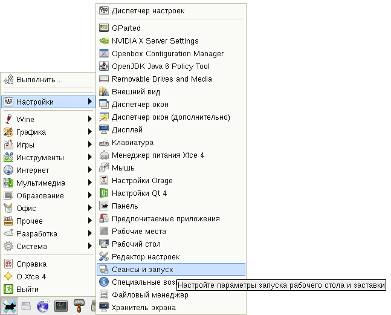

На этой неделе поменял работу. Коллеги с прошлой работы подарили клавиатуру A4Tech KD-600. Спасибо им большое, клавиатура действительно классная. Выглядит она вот так:
Кроме того, что она чёрного цвета и того, что у неё низкие клавиши, на ней есть ещё 10 дополнительных "мультимедийных" клавиш. Наконец, у меня дошли руки настроить эти клавиши на моём домашнем компьютере под Debian GNU/Linux в XFCE.
Как оказалось, всё довольно просто. Больше времени у меня ушло на выбор программ и действий, которые нужно выполнять при нажатии мультимедийных клавиш.
Итак, перво-наперво, нужно узнать коды клавиш. Для этого запускаем программу xev, нажимаем последовательно клавиши и записываем их коды, появляющиеся в окне консоли.
Например, код клавиши PrtSc равен 111:
KeyRelease event, serial 34, synthetic NO, window 0x2e00001, root 0x335, subw 0x0, time 4811863, (90,272), root:(641,688), state 0x0, keycode 111 (keysym 0xff61, Print), same_screen YES, XLookupString gives 0 bytes: XFilterEvent returns: False
Теперь ставим пакет lineakd:
# apt-get install lineakd
В её файле конфигурации /etc/lineakd.def я не нашёл своей модели клавиатуры, поэтому добавил её описание:
[A4-KD600] brandname = "A4tech" modelname = "Multimedia keyboard KD-600" [KEYS] ScreenShot = 111 WebBrowser = 178 Email = 236 Search = 229 Previous = 234 Next = 233 MediaPlayer = 129 Play|Pause = 162 Mute = 160 VolumeDown = 174 VolumeUp = 176 [END KEYS] [END A4-RFKBS26]
Теперь запускаем под обычным пользователем, настройки клавиатуры которого нужно создать, lineakd таким образом:
$ lineakd -c A4-KD600
A4-KD600 - это название секции файла /etc/lineakd.def, описывающей нашу клавиатуру.
После запуска в домашнем каталоге пользователя будет создан файл .lineakd/lineakd.conf. В этом файле можно задать команды, выполняемые при нажатии клавиш. Я задал такие команды (более ничего не трогая):
Email = /usr/bin/iceweasel https://mail.yandex.ru MediaPlayer = /usr/bin/deadbeef --play Mute = /usr/bin/deadbeef --stop Next = /usr/bin/deadbeef --next Play|Pause = /usr/bin/deadbeef --play-pause Previous = /usr/bin/deadbeef --prev Search = /usr/bin/iceweasel https://google.com VolumeDown = /usr/bin/amixer set Master 1- VolumeUp = /usr/bin/amixer set Master 1+ WebBrowser = /usr/bin/thunar /home/stupin ScreenShot = /usr/bin/xfce4-screenshooter -w
Итак, клавиши справа сверху вниз выполняют следующие действия:
Клавиши слева сверху вниз выполняют следующие действия:
И дополнительно я назначил на клавишу PrtSc запуск программы xfce4-screenshooter для создания снимка текущего окна.
Осталось добавить lineakd в автозагрузку в XFCE. Делается это просто:
Осталось завершить сеанс XFCE и снова войти - lineakd начнёт работу в штатном режиме.